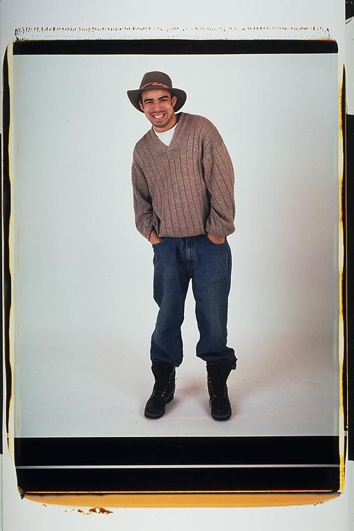

Pals: Boys Who Grew Up Together
elsadorfman.com/pals
Casey: I remember this picture because it was my first solo picture. This is probably the smoothest I've ever looked in an Elsa picture. I really liked that hat and I thought it went well with my outfit. This picture was was part of a set of two -- the other one was a much smoother one and in this one I just relaxed and let loose.
Aldo: Casey is stylin in this picture. I'm not sure when this picture was taken, but it looks like about a few years old. At this time, Casey was finishing up his studies at Columbia. Now he is a very good teacher at a school in Boston. And he lives right around the corner from me.

elsad@comcast.net